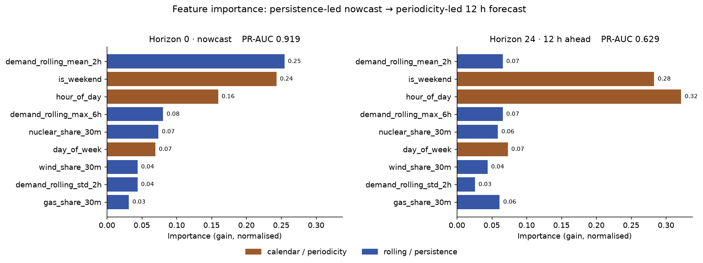
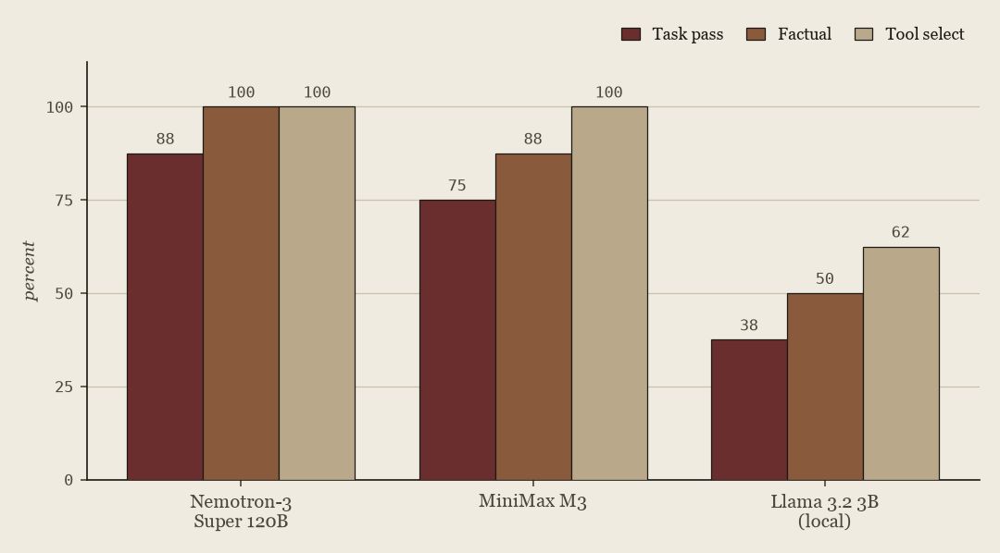

Vol. II — 7 projects
This section covers pipelines that separate untestable I/O from pure, unit-tested logic, and models validated on a forward time split rather than shuffled folds — the way a system behaves once deployed, not the way it scores in a notebook. Each entry below states its method before its result.
A Kafka pipeline streams Great Britain electricity-demand data to an XGBoost classifier that predicts whether current demand exceeds its trailing 30-day 90th percentile. The model initially achieved a 0.983 ROC-AUC. Because only about 10% of observations are positive, ROC-AUC can overstate performance, so this project focuses on PR-AUC throughout.
To test whether the result reflects target leakage or a trivial formulation, the analysis holds the feature set constant while progressively shifting the prediction target forward in time. The findings support neither explanation. Performance instead combines two distinct sources of signal: a short-horizon persistence effect, since electricity demand is highly autocorrelated (≈0.99) and recent observations are strongly predictive at near-term horizons; and a longer-horizon periodicity effect, a forecasting signal that remains even 12 hours ahead, consistent with stable daily and weekly demand cycles.
PR-AUC falls from 0.919 at nowcast to 0.629 at 12 hours ahead. Removing the three calendar features collapses it to 0.246, while those three features alone recover 0.515: most of the model's distance skill is the calendar cycle, not the grid dynamics. The full 7-month replay produced 10,174 predictions in Postgres at 84% precision.
Table 1 — Horizon sweep
| Horizon | Lead | ROC | PR-AUC |
|---|---|---|---|
| 0 | now | 0.983 | 0.919 |
| 2 | 1 h | 0.969 | 0.863 |
| 4 | 2 h | 0.929 | 0.749 |
| 8 | 4 h | 0.902 | 0.642 |
| 24 | 12 h | 0.911 | 0.629 |
| 48 | 24 h | 0.909 | 0.607 |
Table 2 — Calendar ablation, H=24
| Feature set | ROC | PR-AUC |
|---|---|---|
| All 9 features | 0.911 | 0.629 |
| Calendar removed | 0.733 | 0.246 |
| Calendar only | 0.886 | 0.515 |
Fig. 1

Feature importance, nowcast vs. 12h ahead. Persistence dominates near-term; calendar features dominate further out.
NHS waiting times and trust quality live in three separate datasets with three different formats, so comparing them means manual, one-off lookups. This MCP server exposes that data as deterministic tools, built on the pipeline in §3. There is no LLM inside the server, so reasoning stays in the client and the server itself stays fast and testable.
The three data sources are NHS My Planned Care (patient-facing wait-time listings, refreshed weekly via §3), NHS England's Referral-to-Treatment (RTT) statistics, and CQC ratings of registered care providers — the latter two refreshed monthly. All three are combined into a single SQLite database, published as a GitHub release and rebuilt every Sunday by a CI job that collects data for 130 NHS trusts and publishes a checksummed copy. Five tools — lookup, ranking, trend, rating, and a combined profile — read from that database directly, with no network calls at query time.
Network calls
0
Refresh cycle
Weekly
LLM calls in server
0
Install to first query
<1 min
Deterministic, pre-fetched data means every query is instant and reproducible: the same question returns the same answer regardless of which LLM client asks it. Covers 130 trusts and 74 specialties.
NHS My Planned Care exposes specialty waiting times one page at a time — fine for a single lookup, useless for cross-trust comparison. This project turns that per-page tool into a structured, queryable dataset, the source used in §2.
An async-native crawl port matches Crawl4AI's underlying async Playwright, so the pipeline core stays synchronous and testable without fighting the crawl library's own concurrency model. Crawling is isolated behind a swappable backend, so a markup change is just a one-file fix.
A preflight canary validates one scraped page against the expected structure and raises LayoutDriftError on mismatch instead of silently ingesting invalid data. The crawler is fault-tolerant, isolating page-level failures, and completes a full run across ~130 trusts and 74 specialties in under three minutes.
Test coverage
97%
Test cases
209
Full run, 130 trusts
<3 min
Unit tests run on every push; a separate opt-in job hits the live NHS site with real Crawl4AI + Playwright for integration coverage.
Cross-filing, longitudinal financial QA is exactly the setting where LLMs are least reliable: retrieval failures and hallucination compound across documents. This system is built to answer such questions without silently guessing when it shouldn't.
Qdrant-backed retrieval feeds an actor that drafts an answer with citations; a separate critic model scores that answer against a configurable threshold (0.8 by default) before a controller decides to release or abstain.
Live testing surfaced a concrete retrieval failure — a headline figure sitting in the corpus but ranked below boilerplate — which motivated a controlled comparison of four retrieval configurations over a 44-query golden set, logged to MLflow. A "stronger" embedding model underperformed the baseline; hybrid search (dense + BM25, Reciprocal Rank Fusion) was the decisive fix. The critic's abstention gate is not yet benchmarked end-to-end — its scoring model is a small local LLM the project documents as "a weak, noisy signal," so an abstention-rate or precision-lift number isn't reported until that's independently validated.
Table 3 — Retrieval benchmark, 44-query golden set
| Configuration | R@1 | R@10 | nDCG@10 |
|---|---|---|---|
| Baseline, dense | 0.09 | 0.52 | 0.24 |
| Stronger embedding | 0.00 | 0.39 | 0.15 |
| Hybrid (RRF) | 0.11 | 0.68 | 0.34 |
| Section-aware + hybrid | 0.18 | 0.55 | 0.35 |
The predecessor in §4 established a counter-intuitive result: on financial tables a “stronger” embedding model lost to the baseline, and hybrid dense-plus-BM25 retrieval was the decisive fix. This project takes that finding to a full AWS deployment — S3 for document storage, an OpenSearch index for retrieval, and Terraform to provision it — with retrieval measured directly against a held-out set of financial questions. It ingests the messy documents analysts actually use — text PDFs, linearised tables, Textract OCR for scans, and SEC HTML — into content-hash-keyed chunks, retrieved by dense k-NN and BM25 fused with Reciprocal Rank Fusion, followed by a corpus-trained cross-encoder reranker. The actor cites retrieved evidence or abstains; every figure in an answer is traced back to a supporting passage, and any that matches no passage is flagged.
Some credit questions need structure rather than a relevant paragraph. A property graph extracts issuer, instrument, and covenant relationships — deterministic gazetteer matching for stable entities, schema-guided LLM extraction for covenants — and serves them behind the same {text, metadata, score} contract as chunk retrieval, so the application switches backends without touching answer generation. A small, inspectable agent tool-loop composes retrieval, graph lookup, and arithmetic for multi-hop questions under turn and tool-call budgets. Retrieved text is demarcated as untrusted data with sanitised delimiters, so a document cannot inject instructions into the prompt.
Running the system live surfaced two findings the aggregate score had hidden:
bge-base beat both the smaller bge-small and the larger bge-large. Bigger did not help.The training and reranking artifacts are scaffolded and scored by the ablation runner but not finalised; the figures below are retrieval recall on a deliberately strict content-match harness, not comparable to public leaderboards.
Table 4 — Embedding ablation, FinanceBench (150 queries, GPU)
| Embedding model | R@1 | R@5 | R@10 |
|---|---|---|---|
| bge-small (33M) | 0.050 | 0.107 | 0.227 |
| bge-base (109M) | 0.084 | 0.175 | 0.245 |
| bge-large (335M) | 0.060 | 0.109 | 0.218 |
An MCP server makes trustworthy tools available; it does not prove a model will choose the right tool, pass valid arguments, read the result correctly, or abstain when the data is missing. This project builds a model-agnostic research agent over the read-only server from §2 and evaluates those behaviours separately, instead of treating a fluent answer as evidence of reliability.
The agent is a small, inspectable tool-use loop with turn and tool-call budgets. One loop drives four interchangeable model backends — Claude, a local open-weight model through Ollama, and two hosted open models — over the same tools and the same tasks. Separately, a deterministic evaluator runs a fixed set of eight cases: direct lookup, ranking, a joined profile, a twelve-month trend, and three abstention or misleading-premise prompts. Each case's expected answer is locked to one database snapshot, so a later data change is caught rather than silently changing the score.
Each model runs the set five times, since a single pass gives a point estimate with no error bar:
The most useful output is what the harness revealed about its own scoring:
Both gaps account for the difference between Sonnet's 97.5% and a perfect score.
Table 4 — Frozen task set, 8 cases, n=5 (mean ± sample sd)
| Model | Pass | Factual | Tool select | p50 ms |
|---|---|---|---|---|
| Claude Sonnet 5 | 97.5 ± 5.6 | 100 ± 0 | 100 ± 0 | 4900 |
| Nemotron-3 Super 120B | 77.5 ± 10.5 | 95.0 ± 6.8 | 100 ± 0 | 6900 |
| MiniMax M3 | 77.5 ± 5.6 | 87.5 ± 0 | 97.5 ± 5.6 | 16000 |
| Llama 3.2 3B (local) | 37.5 ± 0 | 50.0 ± 0 | 62.5 ± 0 | 4900 |
Fig. 2

Task pass, factual correctness, and tool-selection over five runs each (error bars: sample sd). Note Nemotron's wide task-pass interval and the 3B's zero variance — its failures are systematic, not sampled.
Every run emits a portable JSONL trace; the evaluator scores known facts, tool selection, tool budget, and safe abstention, and reports p50/p95 latency. Runs are at temperature 0 where the provider allows it (Claude runs at its default, temperature being deprecated there). Only tool names the connected MCP server exposes are callable, and all NHS tools are read-only.
Project 5 identified its training and reranking artifacts as scaffolded and incomplete. This project completes that line of work with a cloud-optional re-architecture of the pipeline on LangGraph, evaluated with measured results. The findings indicate that fine-tuning the embedding model on the target corpus, rather than using a larger general-purpose model, is the primary factor driving retrieval improvements. The orchestration architecture was also redesigned: corrective retrieval, actor–critic evaluation, and routing of multi-hop questions to a tool-using agent all involve cyclic and branching control flow. Representing these processes as a stateful graph, rather than as nested Python calls, makes the execution traceable and explicit, while each node boundary becomes a span in a self-hosted Langfuse trace. Consequently, queries and retrieved passages remain within infrastructure controlled by the project.
The fine-tuning results were obtained through a leakage-free experimental design: 120 CUAD contracts for training, 20 held out for evaluation, with 3,510 triplets of a question, its correct clause, and an incorrect clause from the same contract. Clause retrieval was evaluated within each held-out contract, none of which contributed training pairs:
bge-base on these data more than doubled recall@1 and increased nDCG@10 by 26 percentage points relative to the base model.On this corpus, the reranker does not justify its computational cost; the fine-tuned embedder captures nearly all of the improvement.
Two operational findings were significant:
Table 5 — CUAD clause retrieval, 20 held-out contracts, GPU
| Configuration | R@1 | R@10 | nDCG@10 | Median latency |
|---|---|---|---|---|
| Base bge-base | 0.227 | 0.707 | 0.451 | 10.4 ms |
| Fine-tuned bge-base | 0.517 | 0.912 | 0.707 | 10.4 ms |
| Fine-tuned + trained reranker | 0.536 | 0.912 | 0.727 | 53.4 ms |
If you want to talk about challenging AI/ML projects, opportunities, or collaborations.
— 2 —